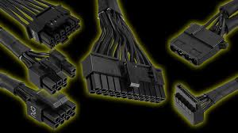

Power Supply Unit (PSU)
The power supply unit gives power to all the parts in your PC. It converts electricity from your wall into the right amount of power that your components need to run safely. Without a PSU, your PC wouldn’t even turn on.
Choosing a good PSU is important because a bad one can cause crashes or even damage your parts. It’s better to have more wattage than you need — for example, if your system uses around 450W, getting a 600W PSU gives you some breathing room for upgrades later.
Why the PSU Matters
Even though it doesn’t affect your FPS, the PSU is the heart of your PC. If it fails, everything fails. A good PSU makes sure your system gets clean, stable power without risk. Modular PSUs also make cable management a lot easier since you only plug in what you need.
Basically, never cheap out on your PSU — it powers everything else and keeps your system safe.